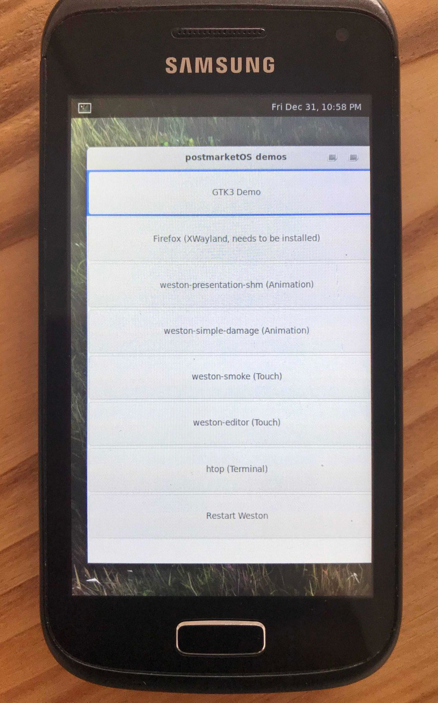

Samsung Galaxy W (samsung-i8150)
|
 Samsung Galaxy W | |
| Manufacturer | Samsung |
|---|---|
| Name | Galaxy W |
| Codename | samsung-i8150 |
| Released | 2011 |
| Category | testing |
| Original software | Android 2.3.5 (up to Android 2.3.6) |
| postmarketOS kernel | 3.4.93 |
| Hardware | |
| Chipset | Qualcomm Snapdragon S2 (MSM8255T) |
| CPU | Dual-core 1.2 GHz Scorpion |
| GPU | Adreno 205 |
| Display | 480 x 800 |
| Storage | 4 GB |
| Memory | 512 MB |
| Architecture | armv7 |
{kind=link}
| USB Networking | |
|---|---|
| Flashing |
Broken
|
| Touchscreen |
Partial
|
| Display |
Works
|
| WiFi | |
| FDE | |
| Mainline | |
| Battery | |
| 3D Acceleration | |
| Audio | |
| Bluetooth | |
| Camera | |
| GPS | |
| Mobile data | |
| SMS | |
| Calls | |
| USB OTG | |
| NFC | |
| Accelerometer | |
|---|---|
| Magnetometer | |
| Ambient Light | |
| Proximity | |
| Hall Effect | |
| Barometer | |
| Power Sensor | |
| Camera Flash | |
|---|---|
| Keyboard | |
| Touchpad | |
| USB-A | |
| HDMI/DP | |
| Ir TX | |
| Ir RX | |
| Stylus | |
| Haptics | |
| Ethernet | |
| FOSS bootloader | |
Contributors
- onny
Rooting
Follow this guide on how to root the phone. Updated download links can be found on later posts.
How to enter flash mode
- Turn off phone
- Connect USB cable
- Hold Volume down + Home + Power until you get the "Warning!!" screen
- Push Volume up to continue to ODIN mode, as per the instructions appearing on the screen
Installation
- Install everything using an SD card
pmbootstrap install --sdcard=/dev/sd? - Insert the SD-Card on the device
- Enter device into flash mode (ODIN), see above
Since Heimdall flashing seems currently broken for this device, I had success using Odin Multi Downloader v4.43 on Windows 7 (KVM) to flash the boot.img into recovery.
First prepare boot.img for flashing with Odin:
$ pmbootstrap export $ cd /tmp/postmarketOS-export $ cp boot.img-samsung-i8150 recovery.img $ tar -cf recovery.tar recovery.img $ md5sum -t recovery.tar >> recovery.tar $ mv recovery.tar recovery.tar.md5
Now we need to flash this file with Odin on Windows. I had luck with using Windows 7 on KVM. Further download and isntall following files inside Windows:
Run Odin and plug your phone which should be already in download mode. Odin should detect your phone printing something like "Added!!!". Select OPS file and check "One Package". As "One Package" choose the recovery file "recovery.tar.md5". Click "Start".
After a reboot try to get into recovery by holding Volume up + Home + Power. Release Power when Samsung logo appears. The phone should now boot the postmarketOS kernel.
See also
- pmaports!2435 Initial merge request
- Heimdall v1.4.2 doesn't seem to work with this device, fails with protocol error
-